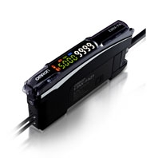

*1. For performance (sensing distance and minimum sensing object) based on November 2013 OMRON investigation.
*2. Compared with E3X-HD.
*2. Compared with E3X-HD.
Building Automation
Industrial Automation
Power Automation & Safety


Bangladesh Distributor
Smart Fiber Amplifier Units

about this Product Family
Related Contents
last update: January 06, 2014
*3. Compared with E3X-HD for normal operation processing.
*4. Model with 1 output: 30 μs, model with 2 outputs: 32 μs.
Wider light intensity adjustment range of 40,000 times (Conventional models*2: 2,000 times) You can automatically adjust the light intensity to an optimum value for stable detection even with saturated or insufficient incident light.
*2. E3X-HD
Just about anyone can make a quantitative decision without special skills.
You can see the passing time and difference in incident levels to facilitate manual setup.
You can confirm changes in displayed values for fast workpieces to accurately set the threshold.
An alarm output* has been added to the DPC that automatically compensates differences in the incident level. A maintenance signal is output when the incident level drops due to dirt or vibration for use in predictive maintenance. (We recommend DPC for through-beam or retro-reflective models.)
*An alarm output is supported only on models with two outputs.
last update: January 06, 2014